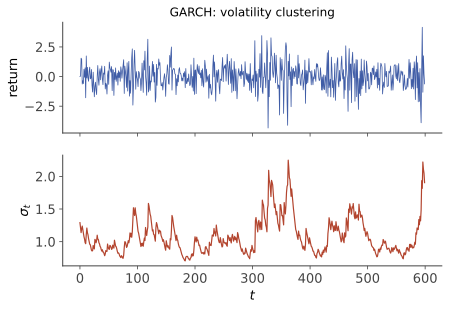

本页目录
时间序列 II · 非平稳、GARCH 与预测纪律
真实数据的三大额外挑战：趋势（非平稳——先处理再建模，否则伪回归吃人）、波动聚集（金融数据的方差本身在动——GARCH 的地盘）、评估（时序预测的验证纪律与截面数据完全不同）。本页每一节都直接对着金融数据与你的预测层。
学习层：你预测的是下一期风险，还是把波动当成因果故事？
1. 具体实例：同样的平均收益，不同的风险状态
设一只资产的日收益为 \(r_t\)。连续五天的大波动之后，即使下一天收益的条件均值仍接近零，下一天的风险也可能和安静期完全不同。GARCH 把这种差异放进
同一时刻，\(\sigma_t^2\) 是给定过去信息的条件方差；无条件方差是把所有历史状态平均掉后的长期基准。实验台会让一个冲击进入固定样本，再把条件波动、创新直方图与多步预测并排显示。先问“我能预测哪一个量”，再问“我能不能解释它”。
2. 先预测：三个门槛先于任何漂亮图形
在揭示实验结果前，先作出三项判断：
- 当 \(\alpha+\beta<1\) 时，长期无条件方差是否有限？当 \(\alpha+\beta\ge 1\) 时还能不能写出同一个长期方差？
- 一次大冲击让下一期条件方差上升后，远期方差会回到哪里？它会无限记住冲击，还是按持久性衰减？
- 看到冲击后的波动响应，能否直接说“这个冲击造成了后续损失”？若创新与其他信息相关，答案是否仍然成立？
实验先隐藏有限方差证书、预测曲线、厚尾统计与冲击响应表；提交预测后才揭示。把“可预测的条件二阶矩”与“无条件分布的长期形状”分开，是本页的第一条纪律。
3. 正式桥：条件、无条件、估计、预测四个层次
令 \(\mathcal F_{t-1}\) 表示截至 \(t-1\) 的信息。若 \(\mathbb E[\varepsilon_t\mid\mathcal F_{t-1}]=0\)、\(\mathbb E[\varepsilon_t^2\mid\mathcal F_{t-1}]=1\)，则
的第二个等式还要求处于因果平稳解，并满足 \(\alpha+\beta<1\) 和相应的有限二阶矩。它不是把每一期的 \(\sigma_t^2\) 都替换成同一个数字；前者随历史变化，后者是总体平均。
从有限初始方差出发，在本页创新条件下，多步条件方差预测满足（有限时域不要求严格平稳）
（\(h\ge2\) 的递推使用未来标准化创新的条件二阶矩为 1）。因此当持久性小于 1 时，预测渐近回到长期方差。参数通常由时序上的准极大似然、厚尾分布似然或稳健估计得到；估计区间、预测区间和未来真实值必须按时间顺序分开。
若 \(\varepsilon_t\) 使用标准化 Student-t，创新可以有厚尾；这解释了极端收益比正态模型更常见，但“厚尾”不自动等于条件均值可预测，也不替代残差诊断。冲击响应是模型下的条件反事实账本，不是仅凭相关图得到的因果效应；因果解释还需要识别假设、外生性或实验设计。
把长期公式推出来。 记 \(v_t=\sigma_t^2\)、\(A_t=\alpha\varepsilon_t^2+\beta\)，则 \(v_t=\omega+A_{t-1}v_{t-1}\)。对因果平稳解，独立性使 \(E[A_{t-1}v_{t-1}]=(\alpha+\beta)E[v]\)；若 \(E[v]<\infty\)，移项得到 \(E[v]=\omega/(1-\alpha-\beta)\)。当 \(\alpha+\beta\ge1\)，等式左侧 \((1-\alpha-\beta)E[v]\) 不可能等于正数 \(\omega\)，所以没有有限无条件方差。
反过来，反复展开给出非负级数 \(v_t=\omega\sum_{j\ge0}\prod_{k=1}^jA_{t-k}\)。若 \(c=\alpha+\beta<1\)，其期望由单调收敛定理等于 \(\omega\sum_{j\ge0}c^j<\infty\)，所以级数几乎处处有限，构成因果平稳解。这补上了“代数上写得出”到“确有有限矩解”的一步。
设 \(F_h=E[v_{t+h}\mid\mathcal F_t]\)。当 \(c<1\)，减去 \(\bar v=\omega/(1-c)\) 即得 \(F_h-\bar v=c^{h-1}(F_1-\bar v)\)。当 \(c=1\)，则 \(F_h=F_1+(h-1)\omega\)，没有有限回归目标。
冲击增量需要一条对照线。 固定当前方差 \(v\)，把已知收益设为 \(s\)，与“当前平方收益等于其条件均值 \(v\)”作比较。第一步增量是 \(\Delta_1=\alpha(s^2-v)\)，以后 \(\Delta_h=c^{h-1}\Delta_1\)。实验同时列出冲击后的方差水平、基准水平和两者之差；这是一种模型内条件比较，人工替换收益的时点不是 iid 创新样本。
4. 可操作实验与静态 fallback
静态 fallback（脚本不可用时）：用 \(\omega=0.00001,\alpha=0.08,\beta=0.90\) 时，持久性为 \(0.98\)，长期方差为 \(0.0005\)，而不是某一天的条件方差。一次 \(-3\%\) 收益会通过 \(\alpha r_t^2\) 抬高下一期条件方差；随后在“未来创新均值为零、方差为一”的预测账本中按 \(0.98\) 的速度回归长期方差。若把 \(\beta\) 调到使 \(\alpha+\beta\ge1\)，长期方差栏应显示“无有限方差证书”。
| 量 | 应该读成什么 | 不能越界成什么 |
|---|---|---|
| 条件方差 | 给定过去信息的下一期风险 | 不是无条件长期方差 |
| 无条件方差 | 平稳条件下的长期基准 | 持久性不小于一时不能硬算 |
| 厚尾 | 创新或方差混合导致极端值更常见 | 不是收益均值可预测的证明 |
| 冲击响应 | 给定模型的条件反事实 | 不是自动成立的因果结论 |
5. 定理与失败边界
- 在 \(\omega>0\)、\(\alpha,\beta\ge0\)、\(\varepsilon_t\) 独立同分布且 \(E\varepsilon_t=0,E\varepsilon_t^2=1\) 的标准 GARCH(1,1) 下，严格平稳解的经典条件是 \(E\log(\alpha\varepsilon_t^2+\beta)<0\)。更强但更易检查的 \(\alpha+\beta<1\) 保证有限二阶矩与协方差平稳，并给出无条件方差公式；它不是严格平稳的必要条件，也不是高阶矩或非线性变体的完整条件。
- 条件方差能预测不等于收益能预测；必须和随机游走/历史均值基线、时间切分与滚动出样本评估比较。
- Student-t 的自由度决定尾部与矩是否存在；估计出的厚尾参数也有不确定性，有限样本直方图不能证明总体尾指数。
- 冲击响应图展示模型内的动态相关；没有外生冲击与识别设计时，不能把它写成“冲击导致了结果”。
- 非平稳样本、制度断点、估计误差和预测误差会让长期回归线失效；有限回放不能冒充一般平稳性定理。
6. 迁移：把三个容易混淆的量分开
- 用本页参数 \(\omega=10^{-5},\alpha=0.08,\beta=0.90\)，从 \(v=0.0001\) 和收益 \(s=-0.03\) 出发，分别求第一步冲击方差、基准方差、增量，以及第二步增量。方差水平以后上升还是下降？
- 设 \(\alpha=0,\beta=0.8\)、创新正态。平稳收益是否一定厚尾？若改成标准化 Student-t，自由度为 3，哪些二阶/四阶结论还成立？
- 一次滚动预测在训练期内选定模型，却用整份数据拟合标准化器；它通过了时间切分吗？
迁移题参考答案
- 冲击方差 \(F_1=0.000172\)，基准 \(F_1^{(0)}=\omega+0.98v=0.000108\)，故 \(\Delta_1=0.000064\)、\(\Delta_2=0.98\Delta_1=0.00006272\)。两条方差水平都低于 \(\bar v=0.0005\)，均逐步上升；增量却逐步缩小。大跌对下一期风险的增量与风险的长期走势不是同一个量。
- \(\alpha=0\) 时平稳方差恒定，所以正态创新仍给正态收益。标准化 \(t_3\) 的方差可归一到 1，四阶矩却发散；条件方差与长期二阶矩公式可用，依赖总体峰度或平方收益总体相关的四阶矩论证不可直接用。有限样本统计量算得出来，不代表相应总体矩存在。
- 没有。标准化参数已经使用未来分布信息。每个预测起点只在当时训练窗口内拟合标准化器、选择参数，再将冻结的变换应用于之后数据；还要留意标签窗口跨越分割边界。
1. 单位根与 ARIMA
随机游走 \(X_t = X_{t-1} + \varepsilon_t\)（本例 \(X_0\) 确定、创新 iid、零均值、方差 \(\sigma^2<\infty\)）（AR(1) 的 \(\phi = 1\)，"单位根"）：方差 \(= t\sigma^2\) 线性发散、冲击永不消退（对比平稳 AR 的指数遗忘）——布朗运动的离散版（sde 线对账）。对数价格有时以随机游走作基线；这只是待检验的模型，有效市场假说本身不推出 iid 正态或严格随机游走。预测 \(\hat X_{t+h} = X_t\)：在平方损失与上述信息设定下，其条件期望预测就是"今天的值"——应在相同损失和出样本协议下与此基线比较，不能仅凭训练拟合优度判断预测价值。
处理：差分。\(I(d)\) 通常指最小非负整数 \(d\) 次差分后成为 \(I(0)\) 的序列；这里的 \(I(0)\) 还包含适当短记忆条件，不能只凭一幅平稳外观判定；对差分序列建 ARMA = ARIMA(p, d, q)（若对数价格确为 \(I(1)\)，对数价格的一阶差分（即对数收益率）才有相应平稳性；不能对所有资产和时段预先断言）。判别：ADF 单位根检验（\(H_0\): 有单位根/非平稳——注意方向：不拒绝 ≠ 证明非平稳，统计 IV 的老规矩）。趋势平稳（确定性趋势+平稳扰动，去趋势即可）与差分平稳（随机趋势，必须差分）是两种病要对症——误诊会造出人工相关。
2. 伪回归：时序统计的头号陷阱
现象（Granger–Newbold 实验）：两个独立的随机游走做水平值回归，也可能频繁得到常规 t 检验的“显著”系数及较高 \(R^2\)。拒绝率依赖样本长度、确定性项、生成过程与所用检验，并非固定的 75%；巧合趋势不能直接解释为关系。
病理：常规 t 检验的参考分布需要误差与设计满足相应外生性、方差/相关结构等条件。对无协整的单位根水平序列，通常的平稳渐近理论失效；仅检查“残差平稳”也不足以恢复所有推断前提（统计 IV"检验的前提"一课的惨案现场）。防身三则：回归前结合生成机制、图形与单位根/协整诊断（ADF 不是自动决策开关）；非平稳序列用差分/收益率回归；若确要在水平值上谈长期关系，走协整（两个 \(I(1)\) 序列的某线性组合平稳——"醉汉与狗"：各自漫游但不走散；配对交易的统计学基础，知其名与含义）。
🔗 研报防身术：宏观变量与资产价格的“显著相关”可能受到水平值伪回归和多重检验影响——看到回测/相关性结论先问三件事：平稳吗？几个假设检验里挑出来的？出样本验证了吗？
3. GARCH：给波动率建模

金融收益序列中常见的经验现象：收益的线性自相关较弱；平方收益可有明显自相关，体现波动聚集；经验分布可比正态更尖峰、厚尾。这些模式需按资产和时段检验。零 ACF 也不等于条件均值不可预测，它只排除了相应的线性相关；谈总体平方收益相关还需要有限四阶矩。
ARCH 的洞察（Engle，诺奖）：建模条件方差。GARCH(1,1)（一个常用起点，是否足够应由残差和出样本表现决定）：
——今天的方差 = 底噪 + 昨天冲击的平方 + 昨天的方差（常被口语化为“方差的 ARMA”）。在 \(\omega>0\)、\(\alpha,\beta\ge0\)、\(\varepsilon_t\) iid、零均值且单位方差的标准设定下，\(\alpha+\beta<1\) 是有限方差证书，此时长期无条件方差为 \(\omega/(1-\alpha-\beta)\)。严格平稳本身由更一般的对数矩条件 \(E\log(\alpha\varepsilon_t^2+\beta)<0\) 刻画，所以“\(\alpha+\beta\ge1\)”不等于“一定不存在严格平稳解”，在本页正参数标准因果平稳模型下，排除了有限无条件二阶矩；并不排除无穷二阶矩的严格平稳解。当估计的 \(\alpha+\beta\) 接近但小于 1 时，模型内方差预测对初始状态的依赖衰减较慢。若正态创新配合非恒定的随机条件方差，且四阶矩有限，则 \(E[r_t^4]=3E[\sigma_t^4]>3(E[\sigma_t^2])^2\)，峰度大于 3；若 \(\alpha=0,\beta<1\) 且处于平稳解，方差恒为 \(\omega/(1-\beta)\)，收益仍正态。这一反例说明“GARCH”名称本身不保证厚尾；幂律尾指数还需要更专门的条件。
用途：在给定模型下预测波动，辅助风险度量。GARCH 通常估计真实概率下的条件风险；期权隐含波动还反映风险中性定价、期限结构和波动风险溢价，二者差异不能直接当成交易收益。风险也有估计误差，不能把“可预测二阶矩”读成风险已被精确测定。
4. 预测纪律（本页的实务收束）
- 切分必须按时间：训练在前、测试在后——随机切分让模型偷看未来（数据泄漏），回测虚高（验证应重现实际预测时可获得的信息；特征计算、缩放、模型选择及重叠标签都要防泄漏）；
- 滚动评估：walk-forward（逐步扩窗/滑窗重估再预测下一步）模拟真实使用；
- 基线必须在场：naive（昨天值）、历史均值、季节 naive——在预先选定的损失与评估区间内比较改进量及其不确定性；
- 区间随模型变化：报告点预测时说明区间的条件与校准；随机游走误差方差随视野增长，稳定 AR 的误差方差趋于上限，GARCH 的条件方差预测也可能从高处下降。不能把“区间一定越来越宽”当成所有模型的定理；
- 制度变化（regime change）：平稳性是局部假设——结构断点（政策、危机）之后旧参数作废；滚动窗口与"模型也会过期"的自觉是最后的防线。
5. 典型例题
例 1（差分定 d） 序列 ACF 衰减极慢近似线性 ⇒ 单位根嫌疑；一阶差分后 ACF 一步截尾 ⇒ ARIMA(0,1,1) 候选（与简单指数平滑预测的对应还需无漂移、合适 MA 参数及一致初始化；ACF 外观只提出候选，不能证明模型）。
例 2（GARCH 更新手算） \(\omega = 0.00001, \alpha = 0.08, \beta = 0.9\)，昨日 \(\sigma_{t-1} = 1\%\)、收益 \(r_{t-1} = -3\%\)（大跌）：\(\sigma_t^2 = 0.00001 + 0.08(0.0009) + 0.9(0.0001) = 0.000172\) ⇒ \(\sigma_t \approx 1.31\%\)——一次冲击把日波动率从 1% 抬到 1.31%，但 \(0.000172\) 仍低于长期方差 \(0.0005\)，所以从这一状态出发的远期方差预测会上升！按 \(0.98\) 衰减的是“预测与长期方差的差”，以及相对同一基准的冲击增量，并不一定是方差水平本身。
例 3（伪回归自检设计） 用代码各生成两条独立随机游走各 200 点，回归看 t 值——重复 100 次统计"显著"比例（报告实际拒绝率及二项抽样误差，不预设固定比例）；再对差分序列重跑。在本例独立正态创新、正确含截距回归与名义 5% 检验下，重复拒绝率才应围绕 5% 波动。十行代码看清一个百年陷阱，值得真跑一次。\(\blacksquare\)
时间序列两页完工。最后一门：图论与组合——离散世界的计数与结构。
先修与来源：条件期望、平稳 ARMA、检验前提。条件风险建模的原始讨论见 Engle 诺贝尔讲演；平稳级数与矩条件可对照研究者 Hanno Reuvers 的 GARCH(1,1) 推导和代码。本页公式推导以明示的创新/因果平稳条件为准，图中有限模拟不验证全部严格平稳性。